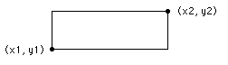

Draw.Box
Syntax
Draw.Box (x1, y1, x2, y2, Color : int)
Description
The Draw.Box procedure is used to draw a box on the screen with bottom left and top right corners of (x1, y1) to (x2, y2) using the specified Color.

Example
This program draws a large box, reaching to each corner of the screen using color number 12. The maxx and maxy functions are used to determine the maximum x and y values on the screen. The point (0,0) is the left bottom of the screen and (maxx, maxy) is the right top.
View.Set ("graphics")
Draw.Box (0, 0, maxx, maxy, 12)
Details
The screen must be in a "graphics" mode. See the View.Set procedure for details. If the screen is not in a "graphics" mode, an error will occur.
Status
Exported qualified.
This means that you can only call the function by calling Draw.Box, not by calling Box.
See also
View.Set, maxx, maxy and the various procedures in the Draw unit.